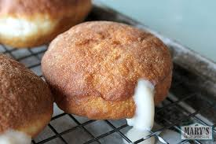

MILKY DOUGHNUT
where are my doughnut lovers,you have not had any doughnut like ours.
its finger-liking good,mmmm i can even taste it from the picture alone.

Im not going to be selfish and keep this deliciously looking doughnut to myself,so lets get right into my recipe
INGREDIENTS:
- 1 cup powdererd milk for milk filling
- 1/2 cup condensed milk
- oil to deep fry
- 2 tablespoon evaporated milk
- 1 tablespoon vanilla extract
- 1/2 teaspoon salt
- 3 tablespoon softened butter
- 1/2 tablespoon yeast
- 1/4 cup sugar
- 2 large eggs at room temperature
- 1/4 cup powdered milk
Alright now dusty your pans and lets get cooking
PROCEDURE:
- Whisk the yeast, warm water(liquid milk), and sugar.Then let it proof for 5-10 minutes till it's foamy at the top.
- Add the flour, powdered milk (if using), eggs,salt,vanilla, and the yeast mixture in a stand mixing bowl.
- Mix manually if you dont own a mixer.
- Add the softened butter and mix again for 5-7 minutes until the dough is slightly sticky.
- Lightly grease a bowl with oil and place the dough inside.Rub some oil on the dough so it dosen't dry or crusty.
- Cover and let it rise for 1 hour 30 minutes.
- Cut parchment paper into 12 x 12 sizes and place it on the working surface.Sprinkle some flour on it.
- Divide the dough into 10-12 portions and roll each portion to form a ball.
- Cover with a cloth and let it proof again for 45 minutes.
- Add oil to a deep pot or pan over medium heat. You can use a thermometer to reach 375℉.
- Add 2-3 donuts at a time and fry for 1 minute each side till golden brown. DO NOT OVER CROWD THE PAN.
- Remove the donuts and place them on absorbent paper.
- Combine the powdered, evaporated and condensed milk and mix well until smooth.
- Transfer the mixture into a piping bag.
- Using a knife, poke a hole in the side of each doughnut and fill it with the milk filling.
And you are ready to soil your shirts......